<html>
<head>
<style type="text/css">
<!--
 img {margin:0;padding:0;border:none;}
 body {margin:0;padding:0;border:0;}

 table{position:absolute;table-layout:fixed;width:512;top:0px;left:0px;z-index:100;margin:0;padding:0;empty-cells:show}
 tr,td,th{text-align:center;vertical-align:middle;margin:0;padding:0;font-size:20px;}
 div{width:100%;height:100%;text-align:center;vertical-align:middle;}
-->
</style>
<script type="text/javascript">
<!--
// 仮テーブル
//0x00  何もない空間
//0x01  破壊可能ブロック
//0x02  破壊可能ブロック２
//0x03  破壊不可能ブロック１
//0x04  破壊不可能ブロック２
//0x05  下から乗り上げ可能ブロック
//0x06  コイン
//0x07  見えないけど破壊不可能ブロック(見えない壁など)
//0x08  縦土管左
//0x09  縦土管右
//0x0A  縦土管首左
//0x0B  縦土管首右
//0x0C  横土管首上
//0x0D  横土管首下
//0x0E  横土管首上
//0x0F  横土管首下

//0x10  コインブロック		アイテムボックス
//0x11  アイテムブロック(キノコ)	アイテムボックス
//0x12  アイテムブロック(★)	アイテムボックス
//0x13  アイテムブロック(1UP)	アイテムボックス
//0x14  アイテムブロック(ツタ)	アイテムボックス
//〜0x1F アイテムブロック (汎用)

//0x20  コインブロック		ノーマルグラフィック
//0x21  アイテムブロック(キノコ)	ノーマルグラフィック
//0x22  アイテムブロック(★)	ノーマルグラフィック
//0x23  アイテムブロック(1UP)	ノーマルグラフィック
//0x24  アイテムブロック(ツタ)	ノーマルグラフィック
//〜0x2F アイテムブロック (汎用)

//0x30  コインブロック		見えないブロック
//0x31  アイテムブロック(キノコ)	見えないブロック
//0x32  アイテムブロック(★)	見えないブロック
//0x33  アイテムブロック(1UP)	見えないブロック
//0x34  アイテムブロック(ツタ)	見えないブロック
//〜0x3F アイテムブロック (汎用)

//0x40〜0x4F 背景用(当たり判定あり)
//0x50〜0x5F 背景用(当たり判定無し)


//0x6D ポール
//0x6E ポール球
//0x6F 斧
//0x7A〜7E 触るとイベントになるブロック
//0x7F ゴールイベントポイント

//128 0x80 栗
//129 0x81 緑亀
//129 0x82 赤亀
//130 0x83 黒亀
//131 0x84 羽緑亀(ジャンプ)
//132 0x85 羽赤亀(縦飛行)
//133 0x86 羽赤亀(横飛行)

//0xF0〜
//0xF1  土管ワープ用(上)
//0xF2  土管ワープ用(下)
//0xF3  土管ワープ用(左)
//0xF4  土管ワープ用(右)


var charTable=Array();
charTable=Array(
//00  何もない空間
'<div style="background:skyblue;border:1px dotted"></div>',
//01  破壊可能ブロック
'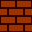',
//02  破壊可能ブロック２
'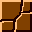',
//03  破壊不可能ブロック１
'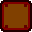',
//04  破壊不可能ブロック２
'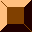',
//05  下から乗り上げ可能ブロック
'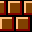',
//06  コイン
'',
//07  見えないけど破壊不可能ブロック(見えない壁など)
'<div style="background:skyblue;border:1px inset">無</div>',
//08  縦土管左
'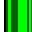',
//09  縦土管右
'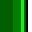',
//0A  縦土管首左
'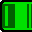',
//0B  縦土管首右
'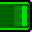',
//0C  横土管首上
'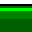',
//0D  横土管首下
'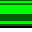',
//0E  横土管首上
'',
//0F  横土管首下
'',
//10  コインブロック		アイテムボックス
'<div style="background:yellow;color:black;font-size:20px;border:1px solid red">＄</div>',
//11  アイテムブロック(キノコ)	アイテムボックス
'<div style="background:yellow;color:black;font-size:20px;border:1px solid red">茸</div>',
//12  アイテムブロック(★)	アイテムボックス
'<div style="background:yellow;color:black;font-size:20px;border:1px solid red">★</div>',
//13  アイテムブロック(1UP)	アイテムボックス
'<div style="background:yellow;color:black;font-size:20px;border:1px solid red;letter-spacing:-2;">1UP</div>',
//14  アイテムブロック(ツタ)	アイテムボックス
'<div style="background:yellow;color:black;font-size:20px;border:1px solid red">蔦</div>',
//15 アイテムブロック (汎用)
'<div style="background:yellow;color:black;font-size:20px;border:1px solid red">$$</div>',
//16 アイテムブロック (汎用)
'<div style="background:yellow;color:black;font-size:20px;border:1px solid red">16</div>',
//17 アイテムブロック (汎用)
'<div style="background:yellow;color:black;font-size:20px;border:1px solid red">17</div>',
//18 アイテムブロック (汎用)
'<div style="background:yellow;color:black;font-size:20px;border:1px solid red">18</div>',
//19 アイテムブロック (汎用)
'<div style="background:yellow;color:black;font-size:20px;border:1px solid red">19</div>',
//1A アイテムブロック (汎用)
'<div style="background:yellow;color:black;font-size:20px;border:1px solid red">1A</div>',
//1B アイテムブロック (汎用)
'<div style="background:yellow;color:black;font-size:20px;border:1px solid red">1B</div>',
//1C アイテムブロック (汎用)
'<div style="background:yellow;color:black;font-size:20px;border:1px solid red">1C</div>',
//1D アイテムブロック (汎用)
'<div style="background:yellow;color:black;font-size:20px;border:1px solid red">1D</div>',
//1E アイテムブロック (汎用)
'<div style="background:yellow;color:black;font-size:20px;border:1px solid red">1E</div>',
//1F アイテムブロック (汎用)
'<div style="background:yellow;color:black;font-size:20px;border:1px solid red">1F</div>',


//20  コインブロック		アイテムボックス
'<div style="background:orangered;color:black;font-size:20px;border:1px solid red">＄</div>',
//21  通常グラフィックのアイテムブロック(キノコ)	アイテムボックス
'<div style="background:orangered;color:black;font-size:20px;border:1px solid red">茸</div>',
//22  通常グラフィックのアイテムブロック(★)	アイテムボックス
'<div style="background:orangered;color:black;font-size:20px;border:1px solid red">★</div>',
//23  通常グラフィックのアイテムブロック(1UP)	アイテムボックス
'<div style="background:orangered;color:black;font-size:18px;border:1px solid red">1UP</div>',
//24  通常グラフィックのアイテムブロック(ツタ)	アイテムボックス
'<div style="background:orangered;color:black;font-size:20px;border:1px solid red">蔦</div>',
//25 通常グラフィックのアイテムブロック (汎用)
'<div style="background:orangered;color:black;font-size:20px;border:1px solid red">$$</div>',
//26 通常グラフィックのアイテムブロック (汎用)
'<div style="background:orangered;color:black;font-size:20px;border:1px solid red">16</div>',
//27 通常グラフィックのアイテムブロック (汎用)
'<div style="background:orangered;color:black;font-size:20px;border:1px solid red">17</div>',
//28 通常グラフィックのアイテムブロック (汎用)
'<div style="background:orangered;color:black;font-size:20px;border:1px solid red">18</div>',
//29 通常グラフィックのアイテムブロック (汎用)
'<div style="background:orangered;color:black;font-size:20px;border:1px solid red">19</div>',
//2A 通常グラフィックのアイテムブロック (汎用)
'<div style="background:orangered;color:black;font-size:20px;border:1px solid red">1A</div>',
//2B 通常グラフィックのアイテムブロック (汎用)
'<div style="background:orangered;color:black;font-size:20px;border:1px solid red">1B</div>',
//2C 通常グラフィックのアイテムブロック (汎用)
'<div style="background:orangered;color:black;font-size:20px;border:1px solid red">1C</div>',
//2D 通常グラフィックのアイテムブロック (汎用)
'<div style="background:orangered;color:black;font-size:20px;border:1px solid red">1D</div>',
//2E 通常グラフィックのアイテムブロック (汎用)
'<div style="background:orangered;color:black;font-size:20px;border:1px solid red">1E</div>',
//2F 通常グラフィックのアイテムブロック (汎用)
'<div style="background:orangered;color:black;font-size:20px;border:1px solid red">1F</div>',


//30  コインブロック		アイテムボックス
'<div style="background:skyblue;color:black;font-size:20px;border:1px solid blue">＄</div>',
//31  見えないアイテムブロック(キノコ)	アイテムボックス
'<div style="background:skyblue;color:black;font-size:20px;border:1px solid blue">茸</div>',
//32  見えないアイテムブロック(★)	アイテムボックス
'<div style="background:skyblue;color:black;font-size:20px;border:1px solid blue">★</div>',
//33  見えないアイテムブロック(1UP)	アイテムボックス
'<div style="background:skyblue;color:black;font-size:18px;border:1px solid blue">1UP</div>',
//34  見えないアイテムブロック(ツタ)	アイテムボックス
'<div style="background:skyblue;color:black;font-size:20px;border:1px solid blue">蔦</div>',
//35 見えないアイテムブロック (汎用)
'<div style="background:skyblue;color:black;font-size:20px;border:1px solid blue">$$</div>',
//36 見えないアイテムブロック (汎用)
'<div style="background:skyblue;color:black;font-size:20px;border:1px solid blue">16</div>',
//37 見えないアイテムブロック (汎用)
'<div style="background:skyblue;color:black;font-size:20px;border:1px solid blue">17</div>',
//38 見えないアイテムブロック (汎用)
'<div style="background:skyblue;color:black;font-size:20px;border:1px solid blue">18</div>',
//39 見えないアイテムブロック (汎用)
'<div style="background:skyblue;color:black;font-size:20px;border:1px solid blue">19</div>',
//3A 見えないアイテムブロック (汎用)
'<div style="background:skyblue;color:black;font-size:20px;border:1px solid blue">1A</div>',
//3B 見えないアイテムブロック (汎用)
'<div style="background:skyblue;color:black;font-size:20px;border:1px solid blue">1B</div>',
//3C 見えないアイテムブロック (汎用)
'<div style="background:skyblue;color:black;font-size:20px;border:1px solid blue">1C</div>',
//3D 見えないアイテムブロック (汎用)
'<div style="background:skyblue;color:black;font-size:20px;border:1px solid blue">1D</div>',
//3E 見えないアイテムブロック (汎用)
'<div style="background:skyblue;color:black;font-size:20px;border:1px solid blue">1E</div>',
//3F 見えないアイテムブロック (汎用)
'<div style="background:skyblue;color:black;font-size:20px;border:1px solid blue">1F</div>',


//40 背景用(当たり判定あり)
'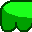',
//41 背景用(当たり判定あり)
'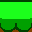',
//42 背景用(当たり判定あり)
'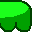',
//43 背景用(当たり判定あり)
'<div style="background:silver;color:red;border:1px outset">43</div>',
//44 背景用(当たり判定あり)
'<div style="background:silver;color:red;border:1px outset">44</div>',
//45 背景用(当たり判定あり)
'<div style="background:silver;color:red;border:1px outset">45</div>',
//46 背景用(当たり判定あり)
'<div style="background:silver;color:red;border:1px outset">46</div>',
//47 背景用(当たり判定あり)
'<div style="background:silver;color:red;border:1px outset">47</div>',
//48 背景用(当たり判定あり)
'<div style="background:green;color:red;border:1px outset;font-size:24px;">┌</div>',
//49 背景用(当たり判定あり)
'<div style="background:green;color:red;border:1px outset;font-size:24px;">┐</div>',
//4A 背景用(当たり判定あり)
'<div style="background:green;color:red;border:1px outset;font-size:24px;">└</div>',
//4B 背景用(当たり判定あり)
'<div style="background:green;color:red;border:1px outset;font-size:24px;">┘</div>',
//4C 背景用(当たり判定あり)
'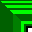',
//4D 背景用(当たり判定あり)
'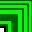',
//4E 背景用(当たり判定あり)
'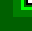',
//4F 背景用(当たり判定あり)
'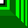',


//50 背景用(当たり判定なし)
'<div style="background:brown;color:blue;border:1px inset">50</div>',
//51 背景用(当たり判定なし)
'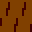',
//52 背景用(当たり判定なし)
'<div style="background:#cccccc;color:blue;border:1px inset">52</div>',
//53 背景用(当たり判定なし)
'<div style="background:#cccccc;color:blue;border:1px inset">53</div>',
//54 背景用(当たり判定なし)
'<div style="background:#cccccc;color:blue;border:1px inset">54</div>',
//55 背景用(当たり判定なし)
'<div style="background:#cccccc;color:blue;border:1px inset">55</div>',
//56 背景用(当たり判定なし)
'<div style="background:#cccccc;color:blue;border:1px inset">56</div>',
//57 背景用(当たり判定なし)
'<div style="background:#cccccc;color:blue;border:1px inset">57</div>',
//58 背景用(当たり判定なし)
'<div style="background:#cccccc;color:blue;border:1px inset">58</div>',
//59 背景用(当たり判定なし)
'<div style="background:#cccccc;color:blue;border:1px inset">59</div>',
//5A 背景用(当たり判定なし)
'<div style="background:#cccccc;color:blue;border:1px inset">5A</div>',
//5B 背景用(当たり判定なし)
'<div style="background:#cccccc;color:blue;border:1px inset">5B</div>',
//5C 背景用(当たり判定なし)
'<div style="background:#cccccc;color:blue;border:1px inset">5C</div>',
//5D 背景用(当たり判定なし)
'<div style="background:#cccccc;color:blue;border:1px inset">5D</div>',
//5E 背景用(当たり判定なし)
'<div style="background:#cccccc;color:blue;border:1px inset">5E</div>',
//5F 背景用(当たり判定なし)
'<div style="background:#cccccc;color:blue;border:1px inset">5F</div>',


//60
'<div style="border:1px solid blue;background:aqua;color:blue;font-size:16px">流←</div>',
//61
'<div style="border:1px solid blue;background:aqua;color:blue;font-size:16px">流→</div>',
//62
'<div style="border:1px solid blue;background:aqua;color:blue;font-size:16px">流↓</div>',
//63
'<div style="border:1px dotted">63</div>',
//64
'<div style="border:1px dotted">64</div>',
//65
'<div style="border:1px dotted">65</div>',
//66
'<div style="border:1px dotted">66</div>',
//67
'<div style="border:1px dotted">67</div>',
//68
'<div style="border:1px dotted">68</div>',
//69
'<div style="border:1px dotted">69</div>',
//6A
'<div style="border:1px dotted">6A</div>',
//6B
'<div style="border:1px dotted">6B</div>',
//6C
'<div style="border:1px dotted;background:green;color:red">蔦</div>',
//6D ポール球
'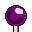',
//6E ポール
'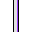',
//6F 斧
'<div style="border:1px dotted">6F</div>',


//70
'<div style="border:1px dotted">70</div>',
//71
'<div style="border:1px dotted">71</div>',
//72
'<div style="border:1px dotted">72</div>',
//73
'<div style="border:1px dotted">73</div>',
//74
'<div style="border:1px dotted">74</div>',
//75
'<div style="border:1px dotted">75</div>',
//76
'<div style="border:1px dotted">76</div>',
//77
'<div style="border:1px dotted">77</div>',
//78
'<div style="border:1px dotted">78</div>',
//79
'<div style="border:1px dotted">79</div>',
//7A 触るとイベントになるブロック
'<div style="border:1px dotted red">7A</div>',
//7B 触るとイベントになるブロック
'<div style="border:1px dotted red">7B</div>',
//7C 触るとイベントになるブロック
'<div style="border:1px dotted red">7C</div>',
//7D 触るとイベントになるブロック
'<div style="border:1px dotted red">7D</div>',
//7E 触るとイベントになるブロック
'<div style="border:1px dotted red">7E</div>',
//7F ゴールイベントポイント
'<div style="background:blue;color:white;border:1px dotted red;font-size:24px;">終</div>',

//80 栗
'<div style="background:brown;border:2px ridge;color:white;font-size:24px;">栗</div>',
//81 緑亀
'<div style="background:darkgreen;border:2px ridge;color:white;font-size:24px;">亀</div>',
//82 赤亀
'<div style="background:darkred;border:2px ridge;color:white;font-size:24px;">亀</div>',
//83 黒亀
'<div style="background:black;border:2px ridge;color:white;font-size:24px;">亀</div>',
//84 羽緑亀(ジャンプ)
'<div style="background:darkgreen;border:2px ridge;color:white;font-size:24px;">羽</div>',
//85 羽赤亀(縦飛行)
'<div style="background:darkred;border:2px ridge;color:white;font-size:12px;">羽<br>縦</div>',
//86 羽赤亀(横飛行)
'<div style="background:darkred;border:2px ridge;color:white;font-size:12px;">羽横</div>',
//87 トゲ
'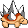',
//88
'<div style="background:darkgreen;border:2px ridge;color:white;font-size:14px;">食花</div>',
//89
'<div style="background:darkred;border:2px ridge;color:white;font-size:14px;">食花</div>',
//8A
'<div style="background:black;border:2px ridge;color:white;font-size:24px;">弾</div>',
//8B
'<div style="background:black;border:2px ridge;color:white;font-size:24px;">砲</div>',
//8C
'<div style="background:red;border:2px ridge;color:white;font-size:24px;">魚</div>',
//8D
'<div style="background:red;border:2px ridge;color:white;font-size:14px;">飛魚</div>',
//8E
'<div style="background:white;border:2px ridge;color:orange;font-size:20px;">イカ</div>',
//8F
'<div style="background:red;border:2px ridge;color:yellow;font-size:14px;">火玉</div>',

//90
'<div style="background:darkorange;border:2px ridge;color:white;font-size:24px;">範</div>',
//91
'<div style="background:darkorange;border:2px ridge;color:white;font-size:14px;">雲蔵</div>',
//92
'<div style="border:1px dotted">92</div>',
//93
'<div style="border:1px dotted">93</div>',
//94
'<div style="border:1px dotted">94</div>',
//95
'<div style="border:1px dotted">95</div>',
//96
'<div style="border:1px dotted">96</div>',
//97
'<div style="border:1px dotted">97</div>',
//98
'<div style="border:1px dotted">98</div>',
//99
'<div style="border:1px dotted">99</div>',
//9A
'<div style="border:1px dotted">9A</div>',
//9B
'<div style="border:1px dotted">9B</div>',
//9C
'<div style="border:1px dotted">9C</div>',
//9D
'<div style="border:1px dotted">9D</div>',
//9E
'<div style="border:1px dotted">9E</div>',
//9F
'<div style="border:1px dotted">9F</div>',

//A0
'<div style="border:1px dotted">A0</div>',
//A1
'<div style="border:1px dotted">A1</div>',
//A2
'<div style="border:1px dotted">A2</div>',
//A3
'<div style="border:1px dotted">A3</div>',
//A4
'<div style="border:1px dotted">A4</div>',
//A5
'<div style="border:1px dotted">A5</div>',
//A6
'<div style="border:1px dotted">A6</div>',
//A7
'<div style="border:1px dotted">A7</div>',
//A8
'<div style="border:1px dotted">A8</div>',
//A9
'<div style="border:1px dotted">A9</div>',
//AA
'<div style="border:1px dotted">AA</div>',
//AB
'<div style="border:1px dotted">AB</div>',
//AC
'<div style="border:1px dotted">AC</div>',
//AD
'<div style="border:1px dotted">AD</div>',
//AE
'<div style="border:1px dotted">AE</div>',
//AF
'<div style="border:1px dotted">AF</div>',


//B0
'<div style="background:darkgreen;border:2px ridge;color:white;font-size:14px;">亀三</div>',
//B1
'<div style="border:1px dotted">B1</div>',
//B2
'<div style="border:1px dotted">B2</div>',
//B3
'<div style="border:1px dotted">B3</div>',
//B4
'<div style="border:1px dotted">B4</div>',
//B5
'<div style="border:1px dotted">B5</div>',
//B6
'<div style="border:1px dotted">B6</div>',
//B7
'<div style="border:1px dotted">B7</div>',
//B8
'<div style="border:1px dotted">B8</div>',
//B9
'<div style="border:1px dotted">B9</div>',
//BA
'<div style="border:1px dotted">BA</div>',
//BB
'<div style="border:1px dotted">BB</div>',
//BC
'<div style="border:1px dotted">BC</div>',
//BD
'<div style="border:1px dotted">BD</div>',
//BE
'<div style="border:1px dotted">BE</div>',
//BF
'<div style="border:1px dotted">BF</div>',


//C0
'<div style="background:orange;border:2px ridge;color:red;font-size:14px;">火→</div>',
//C1
'<div style="background:orange;border:2px ridge;color:red;font-size:14px;">火←</div>',
//C2
'<div style="background:orange;border:2px ridge;color:red;font-size:12px;">火<br>→→</div>',
//C3
'<div style="background:orange;border:2px ridge;color:red;font-size:12px;">火<br>←←</div>',
//C4
'<div style="border:1px dotted">C4</div>',
//C5
'<div style="border:1px dotted">C5</div>',
//C6
'<div style="border:1px dotted">C6</div>',
//C7
'<div style="border:1px dotted">C7</div>',
//C8
'<div style="background:red;border:2px ridge;color:orange;font-size:14px;">跳台</div>',
//C9
'<div style="border:1px dotted">C9</div>',
//CA
'<div style="background:silver;border:2px ridge;color:red;font-size:20px;">城</div>',
//CB
'<div style="background:silver;border:2px ridge;color:darkred;font-size:20px;">城</div>',
//CC
'<div style="background:silver;border:2px ridge;color:darkred;font-size:20px;">姫</div>',
//CD
'<div style="border:1px dotted">CD</div>',
//CE
'<div style="border:1px dotted">CE</div>',
//CF
'<div style="border:1px dotted">CF</div>',


//D0
'<div style="border:1px dotted">D0</div>',
//D1
'<div style="border:1px dotted">D1</div>',
//D2
'<div style="border:1px dotted">D2</div>',
//D3
'<div style="border:1px dotted">D3</div>',
//D4
'<div style="border:1px dotted">D4</div>',
//D5
'<div style="border:1px dotted">D5</div>',
//D6
'<div style="border:1px dotted">D6</div>',
//D7
'<div style="border:1px dotted">D7</div>',
//D8
'<div style="border:1px dotted">D8</div>',
//D9
'<div style="border:1px dotted">D9</div>',
//DA
'<div style="border:1px dotted">DA</div>',
//DB
'<div style="border:1px dotted">DB</div>',
//DC
'<div style="border:1px dotted">DC</div>',
//DD
'<div style="border:1px dotted">DD</div>',
//DE
'<div style="border:1px dotted">DE</div>',
//DF
'<div style="border:1px dotted">DF</div>',

//E0 LIFT-UP
'<div style="background:skyblue;color:red;border:1px solid;font-size:18px;">L↑</div>',
//E1 LIFT-DOWN
'<div style="background:skyblue;color:red;border:1px solid;font-size:18px;">L↓</div>',
//E2 LIFT-LEFT
'<div style="background:skyblue;color:red;border:1px solid;font-size:18px;">L←</div>',
//E3 LIFT-RIGHT
'<div style="background:skyblue;color:red;border:1px solid;font-size:18px;">L→</div>',
//E4 LIFT-FALL
'<div style="background:skyblue;color:red;border:1px solid;font-size:24px;">▼</div>',
//E5 LIFT-RISE
'<div style="background:skyblue;color:red;border:1px solid;font-size:24px;">▲</div>',
//E6 LIFT-UPDOWN
'<div style="background:skyblue;color:red;border:1px solid;font-size:16px;line-height:80%;">↑↓</div>',
//E7 LIFT-L-R
'<div style="background:skyblue;color:red;border:1px solid;font-size:16px;letter-spacing:-8;">←→</div>',
//E8
'<div style="background:skyblue;color:red;border:1px solid;font-size:16px;">雲→</div>',
//E9
'<div style="background:skyblue;color:red;border:1px solid;font-size:16px;">天秤</div>',
//EA
'<div style="border:1px dotted">EA</div>',
//EB
'<div style="border:1px dotted">EB</div>',
//EC
'<div style="border:1px dotted">EC</div>',
//ED
'<div style="border:1px dotted">ED</div>',
//EE
'<div style="border:1px dotted">EE</div>',
//EF
'<div style="border:1px dotted">EF</div>',

//F0
'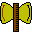',
//F1  土管ワープ用(上)
'<div style="background:blue;color:aqua;font-size:12px;">土管<br>↑</div>',
//F2  土管ワープ用(下)
'<div style="background:blue;color:aqua;font-size:12px;">土管<br>↓</div>',
//F3  土管ワープ用(左)
'<div style="background:blue;color:aqua;font-size:12px;">土管<br>←</div>',
//F4  土管ワープ用(右)
'<div style="background:blue;color:aqua;font-size:12px;">土管<br>→</div>',
//F5
'<div style="border:1px dotted">F5</div>',
//F6
'<div style="border:1px dotted">F6</div>',
//F7
'<div style="border:1px dotted">F7</div>',
//F8
'<div style="border:1px dotted">F8</div>',
//F9
'<div style="border:1px dotted">F9</div>',
//FA
'<div style="border:1px dotted">FA</div>',
//FB
'<div style="border:1px dotted">FB</div>',
//FC
'<div style="border:1px dotted">FC</div>',
//FD
'<div style="border:1px dotted">FD</div>',
//FE
'<div style="border:1px dotted">FE</div>',
//FF
'<div style="border:1px dotted">FF</div>'


);

 function tbl(){
	var t="";
  for(var i=0;i<charTable.length;i++){
	if(i==0)t+="<tr>";
	else
	if(i%16==0)t+="</tr><tr>";
	t+='<th style="width:32px;height:32px;">'+charTable[i]+'</th>';
	
  }
  t='<table cellspacing="0" cellpadding="0">'+t+"</table>";
  document.write(t);
 } //
//-->
</script>
</head>
<body style="margin:0;padding:0;border:none;">
<script type="text/javascript">
<!--
 tbl();
//-->
</script>
</body>
</html>